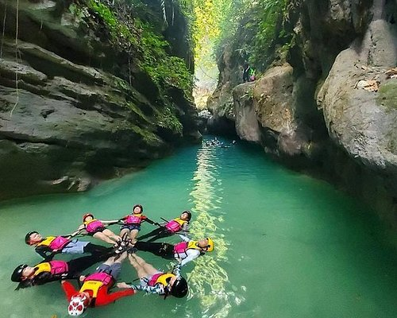

Author: Sanvel Ian Salipot
Published: January 7, 2025
Read Time: 9 min
Location: Cebu, Philippines
Cebu, fondly known as the "Queen City of the South," is a paradise for adventure seekers. Nestled in the heart of the Philippines, it boasts a unique combination of stunning natural landscapes, thrilling activities, and rich cultural experiences. Whether you're someone who loves exploring the great outdoors, diving into underwater wonders, or simply seeking a new adventure, Cebu promises excitement at every turn. The waters surrounding Cebu are a haven for marine life and offer unforgettable experiences for divers and snorkelers. Moalboal is one of the most famous destinations, where you can witness the awe-inspiring sardine run. Imagine swimming alongside millions of tiny fish that move together in synchronized patterns—a truly magical underwater spectacle. Oslob, another popular spot, offers the chance to swim with whale sharks, the gentle giants of the sea. These majestic creatures are harmless, and swimming alongside them is an experience that’s both thrilling and humbling. For adventurers who prefer land-based thrills, Cebu’s rugged terrain offers endless opportunities. One of the highlights is canyoneering in Badian. This activity combines trekking through rivers, climbing over rocks, leaping off cliffs, and sliding down waterfalls. The adventure leads to Kawasan Falls, a picture-perfect destination with turquoise waters that invite you to take a refreshing dip. Meanwhile, hiking enthusiasts will find Osmeña Peak in Dalaguete irresistible. The climb to Cebu’s highest point is relatively easy and rewards adventurers with breathtaking views of jagged hills and the ocean beyond. Cebu is also home to countless waterfalls, each offering its own charm and beauty. Kawasan Falls may be the most well-known, but other hidden gems await those who seek them. Tumalog Falls in Oslob enchants visitors with its thin, curtain-like streams cascading over moss-covered rocks, creating a serene and magical atmosphere. For those willing to trek a little further, Dao Falls in Samboan and Montaneza Falls in Malabuyoc provide thrilling adventures, complete with scenic trails and the soothing sound of rushing water. The adventures in Cebu aren’t limited to its surface. Beneath the island’s beauty lies a world of caves and underground wonders waiting to be explored. Hinagdanan Cave, with its impressive stalactites and stalagmites, is perfect for those who love spelunking and photography. Meanwhile, the vast chambers of Balay sa Agta Cave in Argao are a playground for thrill-seekers who enjoy the challenge of navigating massive cave systems. For water sports enthusiasts, Cebu has no shortage of options. Mactan Island is a hotspot for activities like parasailing, jet-skiing, and windsurfing. For a more laid-back experience, kayaking or paddleboarding around the island’s calm waters is equally enjoyable. Island-hopping tours are also a must, with destinations like Malapascua and Bantayan offering pristine beaches and vibrant marine sanctuaries. Malapascua is particularly famous for diving with thresher sharks, while Bantayan provides a more relaxed vibe with its white sand beaches and tranquil surroundings.  Cebu’s adventures extend beyond its natural attractions. The island is steeped in history and culture, offering a different kind of exploration for those interested in its rich heritage. Historical landmarks like Magellan’s Cross, Fort San Pedro, and the Basilica Minore del Santo Niño offer a glimpse into Cebu’s role in shaping the history of the Philippines. Of course, no adventure in Cebu is complete without indulging in its culinary delights. Cebu’s lechon is world-famous for its crispy skin and juicy meat, often hailed as the best roasted pig in the country. Puso, or hanging rice, is a unique local delicacy that’s a must-try for visitors. After a day of exploration, enjoying Cebu’s food scene is the perfect way to end an action-packed day. What makes Cebu truly stand out is the warmth and hospitality of its people. The locals, known as Cebuanos, are always ready to lend a helping hand or share stories about their beloved province. Their genuine kindness and welcoming spirit ensure that every visitor feels at home, no matter where their adventure takes them. Cebu is a destination that offers a little bit of everything—adrenaline-pumping activities, serene escapes, and cultural discoveries. It’s a place where adventure seekers can dive into the depths of the ocean, trek through lush landscapes, and immerse themselves in vibrant culture all in one trip. If you’re looking for a destination that guarantees unforgettable experiences, Cebu is the perfect choice. Pack your bags and prepare for an adventure like no other, because Cebu is waiting to be explored.